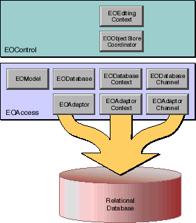
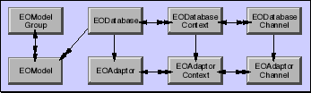
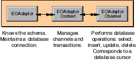
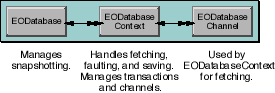
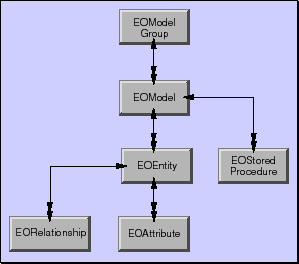

PATH
Documentation > WebObjects 4.5 >
EOF Developer's Guide
 Table of Contents
Table of Contents  Previous Section
Previous Section
Classes in a Command-Line Program
A command-line program-one that doesn't have a graphical user interface-uses the most fundamental Enterprise Objects Framework classes (Figure 11). The same classes are used in all the most typical types of applications, but other types add other classes for interacting with the user interface.

Figure 11. Framework classes in a Command-Line Program
The next sections introduce these classes, following the flow of data from the database, through the access layer, to the control layer.
The Access Layer
The access layer is the part of the Framework that interacts with the database. Its role in a command-line program is much the same as it is in all other types: it fetches rows of data from a database, creates enterprise objects from the fetched data, and registers the enterprise objects with the control layer-the next layer up in an application's architecture. Later, when the control layer has changes to save, it directs the access layer to write those changes to the database.
The access layer is divided into three functional groupings:
Figure 12 shows how each grouping fits into the architecture of an application. The bottom row of classes (EOAdaptor, EOAdaptorContext, and EOAdaptorChannel) constitutes the adaptor level. The top row of classes in (EODatabase, EODatabaseContext, and EODatabaseChannel) constitutes the database level.
EOModel is one of the modeling classes. An EOModel object represents the whole database-to-objects mapping in entity-relationship terms, while other modeling classes correspond to components of that mapping. The adaptor level, database level, and modeling classes are described in greater detail in the following sections.

Figure 12. The Access Layer
The Adaptor Level
The adaptor level defines a server-independent interface for working with relational database systems. Figure 13 shows the adaptor level classes and the behaviors associated with each class.

Figure 13. Adaptor Level
Server-specific subclasses encapsulate the behavior of database servers, thereby offering a uniform way of interacting with servers while still allowing applications to exploit their unique features. For example, the Framework provides the classes OracleAdaptor, OracleAdaptorContext, and OracleAdaptorChannel which implement the functionality specified in the adaptor level in terms of the Oracle client libraries. Together, the server-specific subclasses are referred to as an adaptor. For instance, the Oracle subclasses are collectively referred to as the Oracle adaptor.
The adaptor level deals with database rows packaged as NSDictionary objects. When an adaptor fetches from a relational database, it receives the raw data in whatever form the database client libraries provide. The adaptor then packages the data in dictionaries-one per database record. Each dictionary contains key-value pairs; the keys typically represents the name of a column, and the key's value corresponds to the data for the column in that particular row. Going the other way, the adaptor unpacks dictionaries into raw data that the server can accept whenever it needs to insert or update database rows.
The Database Level
The database level creates enterprise objects from the dictionaries retrieved by the adaptor level. It's also where snapshotting is performed. Snapshotting is used by Enterprise Objects Framework to manage updates. For caching, For updating, when an object is fetched from the database, a snapshot is taken of its state. A snapshot-an NSDictionary object-is consulted when you perform an update to verify that the data in the row to be updated has not changed since you fetched the object.
Figure 14 shows the database level classes and the behaviors associated with each class.

Figure 14. Database Level
Modeling Classes
The correspondence between an enterprise object class and stored data is established and maintained in a model. A model defines, in
entity-relationship terms, the mapping between enterprise object classes and a database. Figure 15 shows the modeling classes.

Figure 15. Modeling Classes
Most of the modeling classes represent components of the database-to-object mapping. The following table summarize the role of those classes:
In addition to storing a mapping between the database schema and enterprise objects, an EOModel object stores information needed to connect to the database server. This connection information includes the name of the adaptor corresponding to your application's database server. An EOModel can also store information about a database's stored procedures (in EOStoredProcedure objects).
While a model can be generated programmatically at run time, the most common approach is to use the EOModeler application to create models and store them in files. The Framework knows how to initialize modeling objects from a model file. Simply by adding a model file to a project, you make the model's database-to-object mapping available to the Framework objects that need to reference it. All of the models available to an application are managed by an EOModelGroup object; see the EOModelGroup class specification in the Enterprise Objects Framework Reference for more information.
For a discussion of entity-relationship modeling and how it relates to Enterprise Objects Framework, see the Appendix "Entity-Relationship Modeling" on page 259.
The Control Layer
In a command-line program, the control layer's responsibility is to manage a graph of enterprise objects, tracking changes to them and directing the access layer to commit those changes to the database when the program is ready to save. The control layer classes that perform these duties are EOObjectStoreCoordinator and EOEditingContext. An EOObjectStoreCoordinator object manages interactions with the access layer, while EOEditingContext objects manage graphs of enterprise objects and track changes to those objects.
Interacting with the Access Layer
The control layer provides an infrastructure for managing enterprise objects that is independent of the storage mechanism being used. Put another way, you can use the control layer to interact with any external store: a relational database, a live data feed, or the file system, for example. To achieve this independence, the control layer defines an abstract class, EOObjectStore, whose subclasses represent "intelligent" sources and sinks of objects for EOEditingContexts. An object store is responsible for constructing and registering objects and for committing changes made in an editing context.
To allow applications to interact with more than one external store, the control layer provides two subclasses of EOObjectStore:
The access layer's EODatabaseContext is a concrete subclass of EOCooperatingObjectStore. Although different subclasses of EOObjectStore or EOCooperatingObjectStore can be defined for different types of external stores, most applications use an EOObjectStoreCoordinator and one or more EODatabaseContexts to access relational databases.
Object Graph Management and Change Tracking
An object graph is a group of related enterprise objects that represents an internally consistent view of an external store-typically a database. In a running application, the object graph is the central repository for data and business logic. An EOEditingContext object, which represents a single "object space" or "document" in an application, manages this in-memory graph of enterprise objects. All objects fetched from an external store are registered in an editing context with a global identifier (an EOGlobalID object) to uniquely identify each object. The editing context is then responsible for watching for changes in its objects and recording snapshots of them for object-based undo. For more information on change tracking, see the EOEditingContext class specification and the EOObserving interface (or protocol) specification in the Enterprise Objects Framework Reference.
Table of Contents  Next Section
Next Section